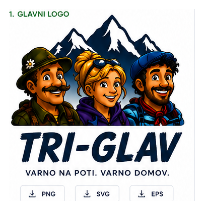
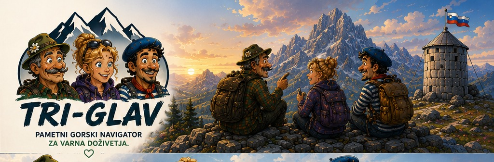
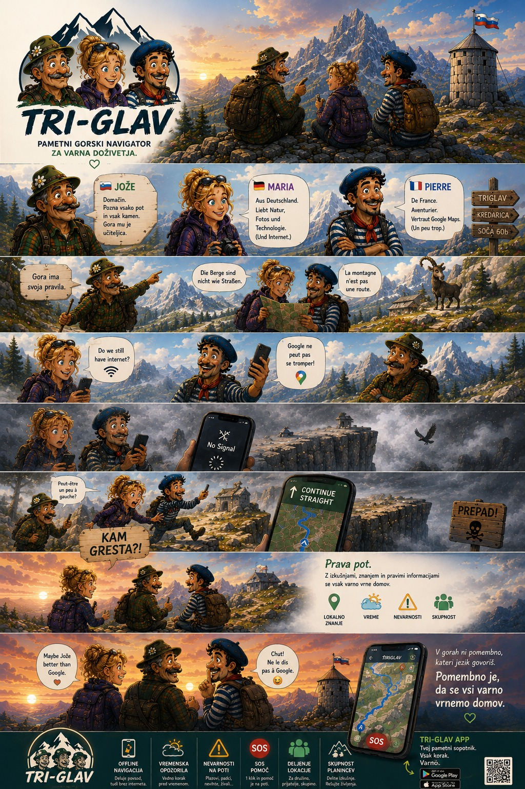
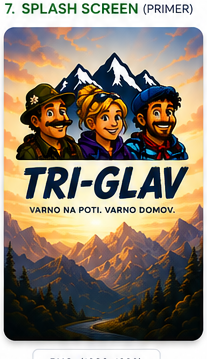
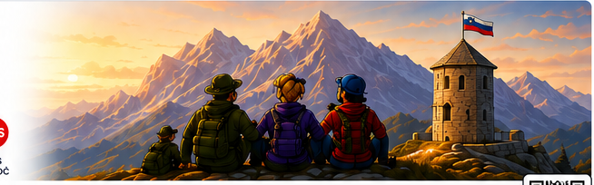

Tri pogledi, ena prava odločitev
Jože pozna teren, Maria zaupa internetu, Pierre navigaciji. TRI-GLAV vse tri poglede poveže v bolj zanesljivo planinsko izkušnjo.
TRI-GLAV
Pametni gorski navigator, ki združi offline navigacijo, lokalno znanje, vremenska opozorila in SOS pomoč, ko je v gorah pomembna prava informacija.


Zgodba TRI-GLAV
V gorah ne zmaga najhitrejša aplikacija, ampak najbolj zanesljiva informacija. TRI-GLAV poveže izkušnje domačinov, aktualne razmere in orodja, ki delujejo tudi brez mobilnega signala.

Jože pozna teren, Maria zaupa internetu, Pierre navigaciji. TRI-GLAV vse tri poglede poveže v bolj zanesljivo planinsko izkušnjo.
Offline poti, opozorila in lokalno znanje pomagajo ravno takrat, ko je v gorah najmanj prostora za napačen korak.
TRI-GLAV ni le zemljevid. Je premišljen sopotnik za vreme, nevarnosti, skupnost in varnejše odločitve na poti.
Zakaj TRI-GLAV
Prava aplikacija za gore ne kaže le smeri. Razume razmere, teren in trenutek, ko potrebuješ pomoč ali boljšo odločitev.
Funkcije
TRI-GLAV je zasnovan za teren, ne samo za zaslon. Vsaka funkcija podpira mirnejšo pripravo in samozavestnejšo odločitev v ključnem trenutku.
Zemljevidi in ključne poti ostanejo dosegljivi tudi brez podatkovne povezave.
Opozorila so vezana na razmere v gorah, ne le na splošno vremensko napoved.
Plazovi, poškodovani odseki, požari in druga opozorila so jasno vidna še pred odhodom.
Ko je pomembna hitrost, dostopaš do nujnih informacij in hitrih akcij z manj koraki.
Aktualne informacije s poti pridejo od ljudi, ki so tam danes, ne prejšnjo sezono.
Domače izkušnje dopolnijo digitalne podatke in pomagajo pri boljši presoji na terenu.
Aplikacija
TRI-GLAV nastaja kot mobilni sopotnik za planince, vodnike in obiskovalce gora, ki želijo zanesljivo pripravo, boljši pregled nad razmerami in enostaven dostop do pomoči.


Kontakt
Izpolni obrazec in pripravili bomo povratni kontakt. Ker je stran statična, obrazec odpre pripravljeno e-pošto v tvojem privzetem odjemalcu, zato deluje tudi brez strežniškega backend-a.
TRI-GLAV
Pomembno je, da se vsi varno vrnemo domov.